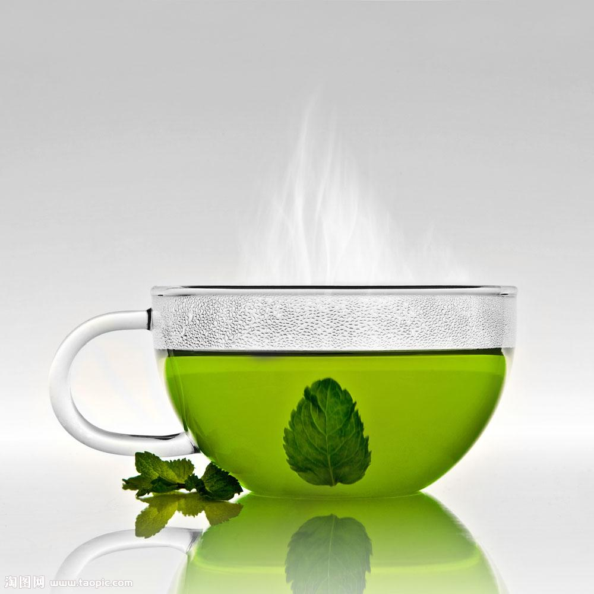
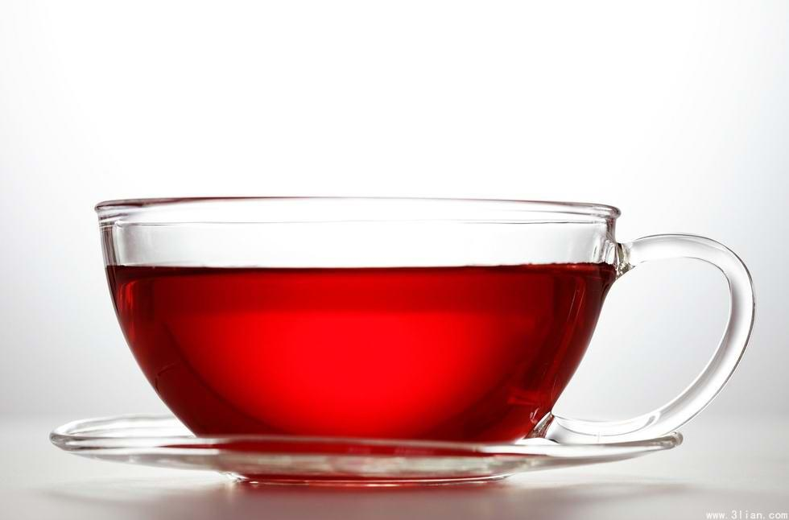

绿茶是未经发酵的，中国产量最多，饮用最为广泛的一种茶.它的特点是汤清叶绿。 绿茶的功效与作用：茶在英国人是：健康之液，灵魂之饮。在我国被誉为国饮。

红茶含有大量的酚类物质，尽管这些酚类物质的分子量很大，与绿茶中的酚类成分有比较大的区别。 但从临床试验结果看，同样也具有抗氧化、降低血脂、抑制动脉硬化，增强毛细血管功能、抗突变等功能。
可口可乐不仅能解渴，而且还能使您有舒畅的愉快感。 可口可乐的良好滋味能促使人们愿意多摄取水分，这对於保持身体健康非常重要。
本店主要经营各种咖啡、奶茶，另外，为了满足顾客的消费需求， 同时经营双皮奶、刨冰、奶昔、果啤，各种果汁及饮料和各种小吃， 如各种口味的瓜子和爆米花，薯片等。 本店主要为情侣设计，也主要是针对大学生。内设小隔间，每个隔间风格各不相同， 赤、橙、黄、绿、青、靛、紫是各个隔间的主打颜色。 在颜色的基础上，通过对摆设的布置突出各种主题。红的热情，绿的清新，橙的温馨，紫的浪漫， （同时还包括一个大的隔间，约12平米。供朋友聚会，生日聚会使用。因为房间有限，使用需要提前预约。 这个要根据店面的大小酌情考虑） 为吸引顾客，本店会通过不断地尝试来研发新类饮品，新类饮品会成为本周的推荐饮品， 在推出的前两天会特价销售，如果反响好的话会成为本店特色产品。为了不被因模仿而被超越， 我们会不断地推出新产品、节日产品和周年产品。如情人节：推出情侣奶茶，光棍节：推出单身奶茶， 儿童节：推出卡通形状的塑料杯。不断地因特色而吸引顾客，使顾客对本店印象深刻，并逐渐地形成口碑， 成为企业的无形的品牌资产。
加入我们一起冰凉一夏吧！我们提供你多种多样的饮料， 相信我们可以让你满意的喝到世界上最好喝的鸡尾酒。本店名“爱吧”易记顺口，可以让人很快记住。 我们的目标是以一般饮品店不具有独有的特色吸引顾客而获取大的利润，专门针对大学生情侣设计。 为情侣提供一个休闲私密而且温馨的地方。爱是一个永恒的主题。 “爱吧”可以让人无限遐想，“爱我吧”“让我们相爱吧”不同的人会有不同的扩展。 这也是一种引人注视的企业文化。 本店的特色不在饮品，而在于独特的环境和服务。 给人提供一种新鲜感。用新鲜的企业文化来征服消费者并获得更多的忠实顾客。
你可以在我们的休闲室听到当下流行的音乐，在音乐的氛围下我们享受饮品带来的快感。 我们为你列了音乐清单，保证每周更新。
我们的炸鸡店在天安门广场门前！ 你可以百度我们的炸鸡店！ 交通便捷：（什么和什么的，我不知道啊你自己想）交叉口，这里交通便捷，地理位置优越，区位优势明显。 地租便宜：利群商场与其他开发区相比，地租相对便宜，可以为这次创业节省大量的资金。我不知道租金啊， 你自己看着说） 市场前景：“爱吧”这一场所位于利群商场，附近有。。。。。。。。。（ 最好是有学校），这为广大情侣或者朋友欢聚提供了场所，同时这一，这一代的经济发展迅速， 所以选址在这一地段有广大的市场前景。